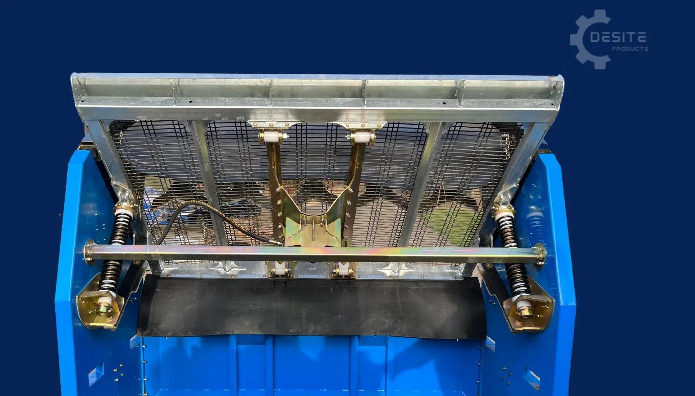
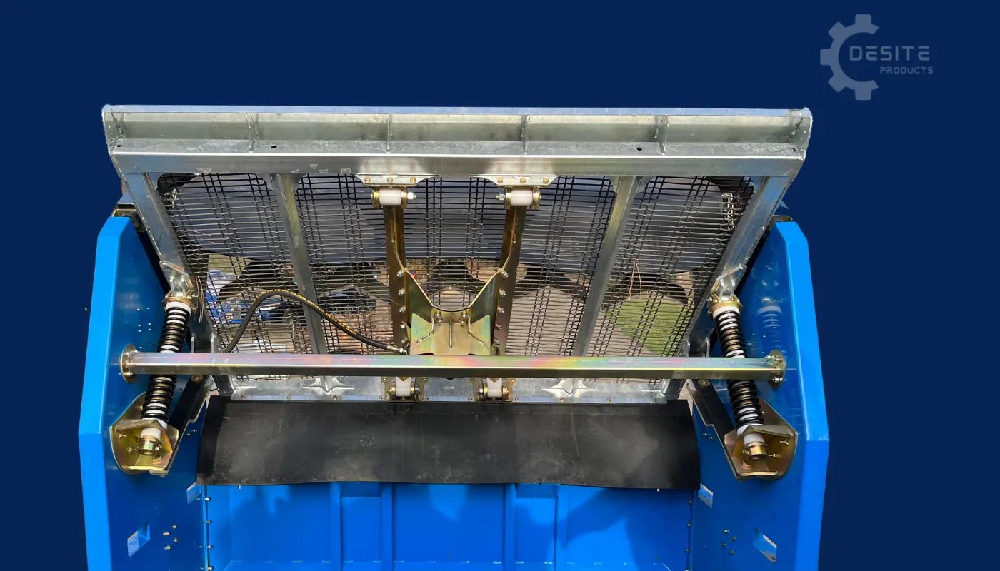

Proscreen SLG-78VF with Flow Control
Portable Topsoil & Rock Screener with Flow Control - Portable screen (907kg). Screens up to 22m³ topsoil an hour. Multiple mesh sizes available.


Product Description
The Proscreen SLG-78VF with Flow Control includes all the features of the standard SLG-78VF model, plus an advanced flow control system that allows for better material distribution and improved screening efficiency.
This model incorporates a Multi Slope Screen Deck that can be adjusted from 45 degrees to 30 degree slope position for maximum production and efficiency. Change the deck slope in 3 minutes.
The SLG-78VF-II with Flow Control is one of the quietest operating screeners in the industry, allowing it to work onsite within urban areas.
Produces up to 22m³ of screened top soil per hour with any small bucket machine. That's excellent value for material on site and less to cart away!
Key Features:
- Flow Control system for improved material distribution
- Multi-slope adjustable screen deck (45° to 30°)
- One of the quietest operating screeners in the industry
- Perfect for urban areas
- Produces up to 22m³ of screened top soil per hour
- Change mesh in 10 minutes
- Easy to move with skid steer loader
- Low maintenance design
Bucket Size Compatibility
Bucket Type: Standard skidsteer and compact loader buckets
Compatible Equipment: Skidsteers, Bucket Tractors, Mid-size Excavators, Compact Loaders
Specifications
Machine Dimensions
- Screen Box Width: 2.5m
- Screen Box Height: 2.2m
- Screen Box Depth: 1.4m
Riser Box
- Riser Box Width: 2.5m
- Riser Box Height: 0.5m
- Riser Box Depth: 1.8m
- Riser Box Weight: 227kg
Weight
- Total Weight – Off Riser: 907kg
- Total Weight – On Riser: 1134kg
Screen Deck
- Screen Deck Width: 2.0m
- Screen Deck Length: 1.3m
- Screen Deck Surface Area: 2.7m²
- Screen Deck Tilt Angle: 45 to 30 degrees
Productivity
- Production Rate: Up to 22m³/hour
Mesh
- Available Mesh Sizes:
- Square Pattern: 6mm, 10mm, 18mm, 30mm, 50mm, 100mm
- Elongated Soil Mesh: 6mm x 100mm, 10mm x 100mm
- Optional mesh sizes upon request
- Change the end tensioned mesh in 10 minutes
Assembly
- The SLG-78 VF with Flow Control comes assembled
Screener Features
Flow Control Wings
The Proscreen SLG-78VF with Flow Control includes advanced Flow Control Wings that lift, rotate and self-centre to improve screening. This unique feature allows for better material distribution across the screen deck, ensuring more efficient screening and improved production rates. The Flow Control system helps direct material flow optimally, reducing waste and maximizing the screening efficiency of the machine.
Feed Deflector System
The SLG-78VF with Flow Control comes standard with a swing away rubber faced feed deflector. This feature helps direct material onto the screen deck efficiently, reducing spillage and improving screening performance. The deflector can be easily adjusted or swung away when not needed, providing flexibility in operation.
Cantilevered Spring Suspension System
 

The SLG-78VF with Flow Control features the same advanced Cantilevered Spring Suspension System found in our other models. This system allows the screener to handle materials with varying moisture content without issues. The action and reaction of this system are essential for achieving optimal screening results, ensuring smooth operation and consistent performance even with challenging materials.
Multi-Slope Tilting Screen Deck

The Multi-Slope Screen Deck can be adjusted from 45 degrees to 30 degrees in just 3 minutes. When screening gravel products, the deck can be moved to the optimal slope position for maximum production and efficiency. This feature, combined with the Flow Control Wings and Cantilevered Spring Suspension System, allows for precise control over the screening process, making it easier to manage materials that are challenging or have a high moisture content.
Vibratory System

The SLG-78VF with Flow Control is equipped with a powerful vibratory system that operates at 3600 RPM. The system is one of the quietest operating screeners in the industry, allowing it to work onsite within urban areas. The vibratory motors are sealed away from the elements, making them maintenance-free and highly durable. The system draws minimal power and can operate on a standard 240v 50Hz circuit or a portable generator.
Pricing (Estimates)
⚠️ All prices are ESTIMATES only and subject to change. Prices converted from AUD to NZD (minimum 15% adjustment for exchange rate and local costs).
Complete Assembled Unit with Flow Control. Adjustable angle Screen Deck with 20x100mm elongate mesh, 240v 50htz vibration, swing away rubber faced feed deflector, sloping legs to adjust the screen angle and loader extensions. Ex Nelson. Price does not include shipping or delivery. Delivery will be arranged with the purchaser and additional charges may apply depending on location.
Additional Options Available:
- Riser Box
- Additional Screen Mesh(s)
- Bucket lift lugs
Please contact us for current pricing and delivery options to your location.
What Can You Screen?
Soil & Organic Materials
- ✓ Sand
- ✓ Topsoil
- ✓ Compost
- ✓ Wood Mulch
Stone & Aggregate
- ✓ Pea Stone
- ✓ Septic Rock
- ✓ Road Gravel
- ✓ Landscape Stone
Recycled Materials
- ✓ Ground Asphalt
- ✓ Crushed Concrete
- ✓ Erosion Control Rock
- ✓ Traction Sand